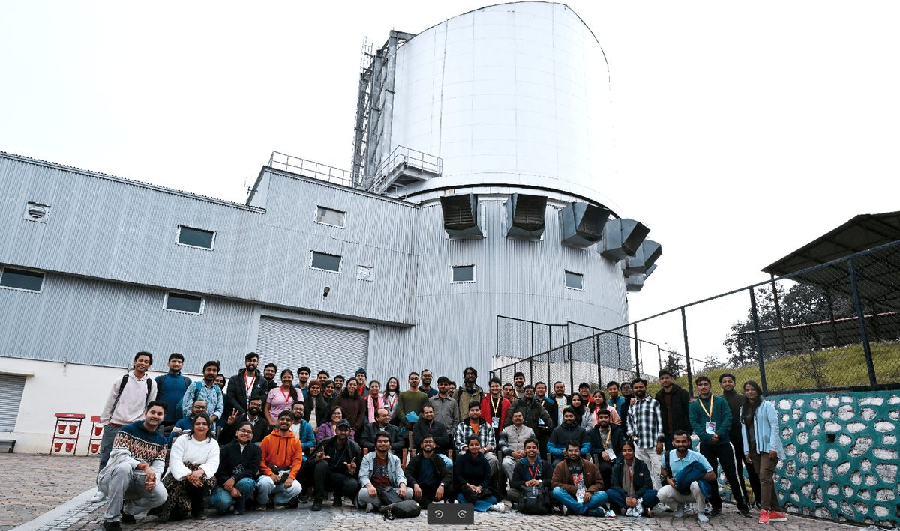
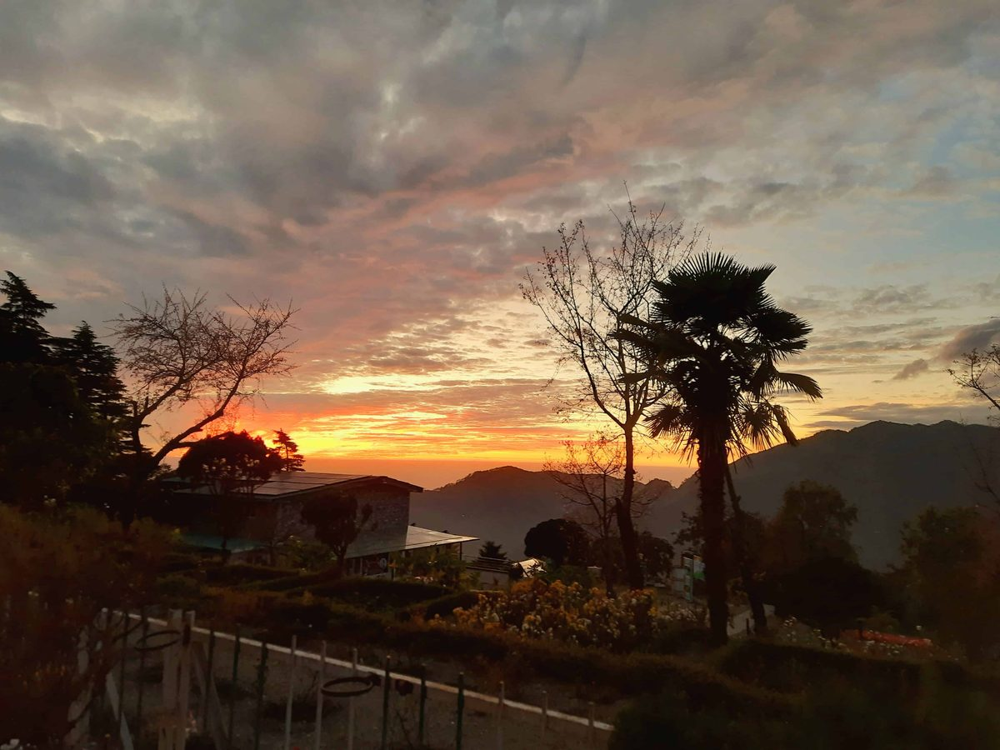
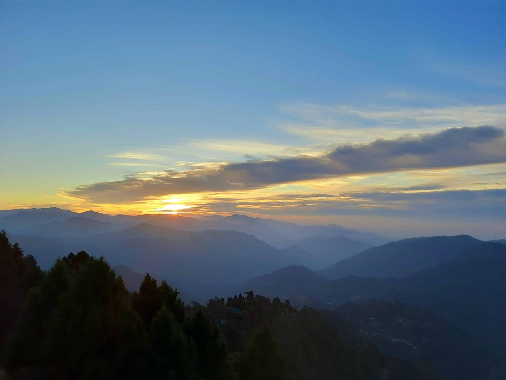
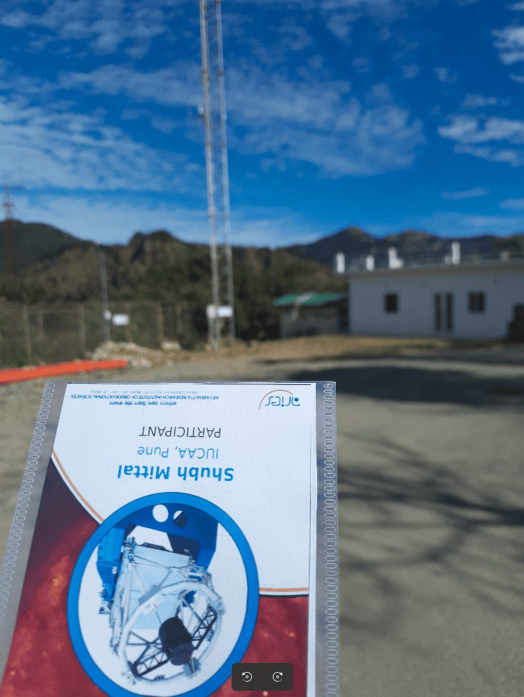
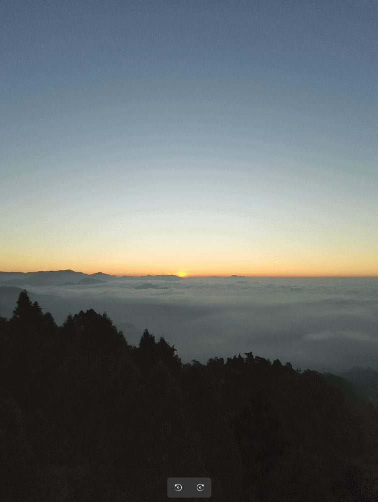

Fig. 01





Visiting the DOT
I had an incredible opportunity to visit the world-class 3.6 m Devasthal Optical Telescope. I honestly didn't realise how huge a 3.6 m telescope is until I was standing right there. It gives you a new appreciation for the massive scale and the precision engineering required to build and operate such a facility.